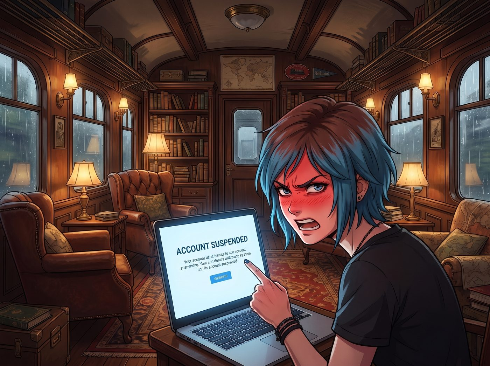
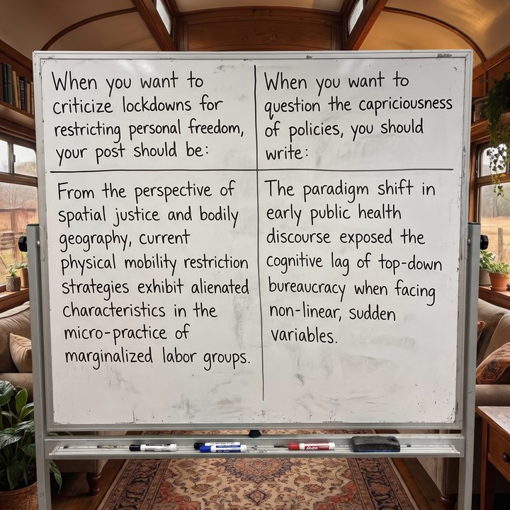

演算法寄生


「草！這群矽谷的文字獄走狗！」
一聲暴怒的咒罵伴隨著滑鼠重重砸在桌面的悶響，二號車廂的平靜再度告吹。
Chloe 氣得整張臉通紅，手指著筆電螢幕破口大罵。螢幕中央赫然亮著那行帳號被停用的藍色告示。
一、雙黃蛋
「又怎麼了，暴躁症患者？」沙發上的 Victoria 連眼皮都沒抬一下，一邊用小銼刀修整指甲一邊冷笑，「妳在推特上跟誰宣戰了？」
「老娘既沒聊政治也沒發陰謀論！」Chloe 抓狂地扯著藍髮，「我不過是在衛生局宣傳戶外六英尺戴口罩打籃球的推文底下，回了一句：如果這套塑料薄膜能防病毒，那我用透明膠帶把皮卡的排氣管纏上是不是就能拿零排放補貼？」
Chloe 喘了口粗氣，越說越委屈：「接著就有個掛著三層口罩頭像的傢伙跑來罵我是反智殺人犯。我氣不過，就吐槽了一句這幾個月的防疫建議一天一個樣，上個月說的規定這個月就推翻重來，根本沒人跟得上，反問他到底誰才是被牽著鼻子走的盲從狗——結果呢？！」
「結果妳在五分鐘內吃了雙黃蛋。」Max 嘆了口氣，把相機放在桌上。
「沒錯！先是推文被自動標註為包含誤導性資訊，點擊分享直接鎖死；三分鐘後我的留言被幽靈隱形；到了剛才，整個帳號直接原地爆炸！永久封禁！」Chloe 揮舞著拳頭，「我那個經營了七年的帳號！裡面有我存了幾百張改裝車圖紙和地下龐克樂團的照片！全沒了！」
在開放式廚房給眾人熱燕麥奶的 Kate 輕聲安慰：「Chloe，現在各大平台都在配合應急算法，只要觸發關鍵字，AI根本不看語境就會直接鎖定的……」
「那是審查！赤裸裸的數字清洗！」Chloe 轉過身，把最後的希望寄託在工作台前的 Lily 身上，「實習生！妳不是行政黑魔法大師嗎？去黑了推特的伺服器，或者用妳那些聯邦條款給他們法務部寄律師函，把我的帳號撈回來！」
二、肉身衝塔
Lily 慢條斯理地合上手頭的財務報表，推了推圓框眼鏡，用一種宛如看著史前生物在泥潭打滾的目光審視著 Chloe。
「Chloe 學姐，請收起您的無效憤怒。」Lily 的嗓音軟糯卻透著手術刀般的冰冷，「您觸犯了網路戰場上最愚蠢的錯誤：肉身衝塔。」
「什麼意思？我講真話也有罪？」
「在演算法的世界裡，沒有真話與假話，只有合規權重。」Lily 伸出纖細的食指輕輕敲擊桌面：「您在用一個未經認證、註冊信箱是垃圾域名、且歷史發文充斥著粗俗髒話的底層平民帳號，去正面硬剛平台最高級別的公衛安全內容過濾器。您的帳號在風控模型裡的威脅評級跟水軍沒有任何區別。被炸號是唯一的數學必然。」
Chloe 泄了氣，一屁股砸進沙發：「那妳說怎麼辦？這口氣老娘咽不下去！難道只能當縮頭烏龜，看著這幫人在網上把黑的說成白的？」
三、身分置換
「誰教您當縮頭烏龜了？」Lily 嘴角勾起一抹極度純潔卻讓背後發涼的微笑。她轉身打開筆記本電腦，調出一排整整齊齊的虛擬機器後台。
「在被主流審查機制籠罩的時代，直接對罵是莽夫的行為。高階的玩法，叫作演算法寄生與信號污染。」
Lily 的十指在鍵盤上飛速敲擊，螢幕上瞬間跳出幾個帶有官方認證勾標的灰色企業檔案：「第一步，身分置換。我剛才用 Victoria 學姐的邊緣青年藝術基金會附屬子項目，向平台提交了API接口認證申請。您的新帳號將被命名為太平洋西北區公共衛生話語與邊緣藝術觀察站。」
Victoria 挑了挑眉：「喂，別隨便用我基金會的名字背鍋。」
「放心，學姐，這能為您的基金會再增加一筆數位包容性研究的免稅抵扣。」Lily 一句話把大小姐堵了回去，接著轉向目瞪口呆的 Chloe：「第二步，語言解構。以後在網路上，您嚴禁使用低級詞彙直接開罵。您要學會使用後現代學術黑話。」
四、學術黑話示範
Lily 推了推眼鏡，當場進行了教科書級的示範：
「當您想罵封城限制人身自由時，您的發文應該是：基於空間正義與身體地理學視角，當前物理流動性限制策略在邊緣勞工群體的微觀實踐中呈現出異化表徵。」
「當您想質疑政策反覆無常時，您要寫：早期公共衛生話語的範式轉移暴露了自上而下科層制在面對非線性突發變量時的認知時滯。」
Lily 甜美地笑了笑：「這套話術的精妙之處在於——審核機器的自然語言處理模型會自動判定這是高階學術討論，不僅不會封鎖，反而會因為含有高權重學術詞彙，自動將推文推薦給名校的學者和智庫研究員。而那個剛才跟妳對罵的路人，連查字典都看不懂妳在罵他，甚至會因為智力被碾壓而自閉刪號。」
Chloe 的下巴徹底砸在了胸口上。她看著螢幕上那一串看起來比天書還高深、實則全是在陰陽怪氣的後現代學術黑話，整個人被震撼得外焦裡嫩。
「這……這也行？這不就是在正經胡說八道嗎？」
五、學術幽靈
「這叫利用規則的防禦性偽裝，學姐。」Lily 遞給她一個全新的加密硬體密鑰，「帳號已經幫您建好了。現在，您是外包計畫支持下的獨立學術觀察員。去吧，用他們聽不懂的高尚詞彙，把那些企圖審查您的人逼瘋。」
Chloe 顫抖著接過密鑰，眼神中閃過一絲前所未有的狂喜與敬畏。她突然覺得，跟這種在規則夾縫中把審查系統當玩具踢的十九歲行政惡魔相比，自己以前在網上狂敲鍵盤的樣子，確實單純得像個智障。
Max 默默端起相機，喀嚓一聲，將白板上 Lily 寫下的後現代對罵黑話對照表拍了下來。
相紙緩緩吐出。Max 在背面寫下：
『規則第五十五條：在言論收緊的時代，不要試圖做一個手無寸鐵的烈士；做一個讓審查演算法的大腦當場燒乾的學術幽靈。』